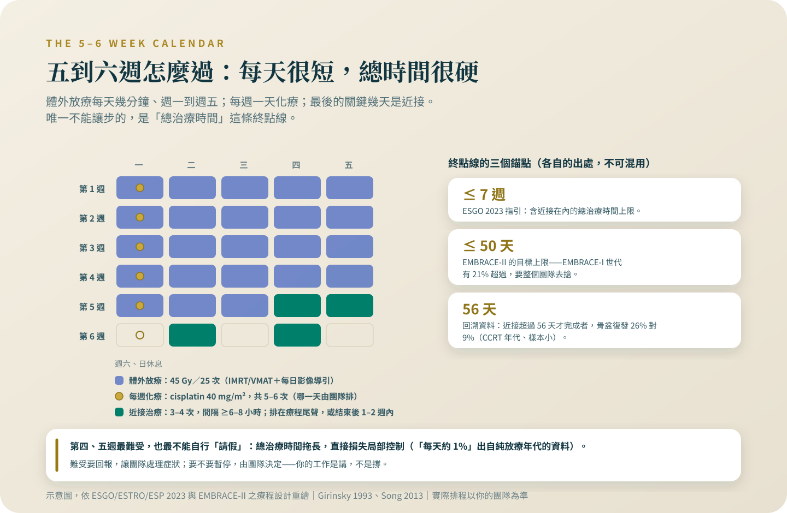

骨盆放療的五、六週怎麼過
全系列的急症總表在這一篇：發燒的度數、腹瀉合併脫水的樣子、哪些狀況當天就要聯絡。還有為什麼療程拖長一週，輸掉的是控制率。
第四、五週最難受的時候，正是最多人想請假的時候。這一篇把「不能自己中斷」背後的三份證據攤開，也把「吃低渣」這個還沒跟上證據的慣例講清楚——難受要講，讓團隊處理，而不是用缺席處理。
先說我的位置：根治性化放療與近接治療是我自己每天在做的治療。所以這個專題裡關於放療的每一句話，我寫得比別人更保守，不是更熱。
骨盆放療是一份全職的功課：每週五天到醫院報到，連續五週，中間穿插每週一次的化療，最後用近接治療收尾。要回答的是兩件事：這五、六週會遇到什麼，以及哪些狀況要當天聯絡團隊——這份清單是整個專題的總表，其他篇都指回這裡。還有一句我要放在最前面講的話：這個療程可以由團隊暫停，但不能由你自己請假。為什麼，下面會用數字交代。
先看一眼這五、六週的形狀
標準的排法是體外放療 45 Gy、分 25 次，每週五次、約五週，用 IMRT 或 VMAT 這類技術加上每天的影像導引[1][2]；化療是每週一天，那一天的流程寫在〈每週化療那一天〉。近接治療通常 3 到 4 次，排在療程接近尾聲或結束後一到兩週內完成；為什麼它不能跳過、不能用體外加強代替，完整的證據在〈近接治療：名字最可怕，那幾天最關鍵〉。指引把含近接在內的總治療時間上限訂在七週[1]——這個數字是這篇文章的主角。
「太累了，休息一週再繼續」——先看這句話的價格
放射生物學裡最硬的一條資料就在這裡：治療拖長，腫瘤會加速再增殖，指引的原文說治療的延遲與中斷必須被避免，總治療時間不超過七週[1]。數字有三個來源，各有各的年代標籤。只做放療的年代：一份 386 人的分析發現超過 52 天之後，局部控制與整體存活大約每拖一天各掉 1%[3]；另一份 209 人的資料，55 天內完成的人五年存活 65%、拖過 55 天的 54%，骨盆控制 87% 對 72%[4]。到了化放療年代，數字沒有變得比較仁慈：一份 113 人的回溯分析裡，近接沒有在 56 天內完成的人，骨盆復發風險是完成者的 3.8 倍（95% 信賴區間 1.2 到 16——區間寬成這樣，數字只能讀方向，不能讀大小），三年骨盆復發 26% 對 9%[5]。「每天 1%」是舊年代、樣本各自不大，精確值不必背；方向卻一致到指引直接寫成上限。而這個上限不是理所當然做得到的事——EMBRACE-I 裡有 21% 的病人超過了 EMBRACE-II 訂的 50 天[2]，排程、假日、副作用處理，每一環都要搶時間。

團隊喊停，跟你自己請假，是兩件不同的事
血球太低、腹瀉太猛的時候，醫師本來就會喊停——那是被監測的暫停：我們知道停了幾天、為什麼停、什麼時候補回來，必要時調整後面的排程去追。你自己不來的那幾天不一樣：沒有人知道、沒有補償、也沒有人處理讓你不想來的那個症狀。所以這篇要你做的事只有一件，跟「撐住」相反：難受要講，講得越早，團隊能用藥物與排程去處理的空間越大，你自己按暫停，輸掉的不是舒適，是控制率。第四、五週通常是最難受的時候，也正是最多人想請假的時候——那幾週請把「今天很糟」直接告訴治療室的護理師，而不是用缺席表達。
加了化療，副作用多出多少：有分母的部分
放療加上每週化療，急性副作用確實比放療單獨多。一份收了 19 個隨機試驗的系統性回顧：第 3 到 4 級白血球毒性的勝算比 2.15、腸胃毒性 1.92[6]——勝算比不是機率的倍數，它比的是「發生對沒發生」的比值，所以直接看絕對數字比較實在：以 bulky IB 期的隨機試驗為例，放療加每週 cisplatin 那組 183 人，暫時性的第 3 到 4 級血液毒性 21%（放療單獨 2%）、腸胃毒性 14%（對 5%）[7]。族群標籤要帶著讀：那是 bulky IB 的試驗，不是每個期別的通用值。
沒有分母的部分我也照實講。疲倦、放射性膀胱炎（頻尿、解尿不舒服）、皮膚變紅脫皮，這些在美國癌症協會的病人頁面都列為常見[8]；但在根治性化放療的族群，我查不到可以引用的可靠發生率，所以只能寫「常見，但我給不出可靠數字」。常見不代表要忍——頻尿到睡不了、累到下不了床，都是回診要講的事。
「放療就要吃低渣」？證據其實指向反方向
多數醫院的衛教單還是寫低渣飲食，我要很小心地說：這是慣例還沒跟上證據，不是誰的錯。2017 年一個 166 名骨盆放療病人的隨機試驗，把人分成低纖、照常、高纖三組，結果高纖組在療程結束時與一年後的腸道症狀都比照常組好，作者的原文直接說：這種限制纖維的、沒有證據基礎的建議應該被放棄[9]。Cochrane 的回顧（4 個試驗、413 人）支持的是另一種調整——脂肪或乳糖的修改可減少放療末的腹瀉（相對風險 0.66，即腹瀉的發生比例約降三分之一；95% 信賴區間 0.51 到 0.87，中等品質、多為較舊技術年代的資料）[10]。所以我的建議是：不要自己開始禁食一長串東西，把腹瀉的狀況帶去跟營養師談個別的調整。腹瀉的藥物處理有歐洲腫瘤學會的指引可循[11]，止瀉藥怎麼用，由團隊指示，不要自己買來壓症狀——壓住了數字，卻蓋住了警訊。
什麼狀況當天就要聯絡：整份清單在這裡
這份清單適用於化放療的整個療程。除了輸注反應那一條要「當場處理」，其餘每一條的動作都一樣：當天聯絡治療團隊或回院，不要等下次回診。
發燒：單次口溫達 38.3°C，或 38.0°C 持續一小時——這是美國感染症醫學會指引的定義[12]。化療會壓低白血球，cisplatin 仿單記載嗜中性球低下病人的感染有致死報告[13]。量到就當急症，不要先吃退燒藥觀察一晚。
腹瀉合併脫水：水瀉停不下來，加上喝不下、尿量明顯變少、站起來頭暈；或腹瀉合併發燒、血便。我不給「一天幾次」的門檻，因為我沒有查到可引用的原文，症狀組合本身就夠了。
解尿出問題：完全解不出尿，或整泡肉眼可見的血尿。
陰道大量出血：短時間內衛生棉濕透、止不住，或出血合併頭暈。
輸注中或輸注後幾分鐘的過敏樣反應：臉腫、胸悶或氣喘、心跳很快、頭暈快要昏倒——當場喊人，還在醫院就地處理，已經離開就立刻回院[13]。化療後幾天尿量明顯變少、下肢水腫，當天聯絡[13]——這兩條的背景與當天實務，寫在〈每週化療那一天〉。耳鳴或聽力變化不是急症，但下次回診一定要講，也在那一篇。
性行為之後發燒或畏寒發抖、會陰或肛門劇痛、出血止不住——不能等隔天。這一題的完整脈絡在站上〈治療中的性生活，誰來開這個口〉。
今天就能開始記的一本五週流水帳
台灣端兩件事。IMRT 與 VMAT 在健保的支付項目檔裡沒有專屬項目，體外放療是按照野計費[14]，各醫院怎麼申報、有沒有自費差額，請直接問醫務課與個管師，我不替任何一邊掛保票。覺得沒有人可以問的時候，全台有 104 家醫院設癌症資源中心，免付費專線 0809-010580[15]。然後，今天就準備一本小冊子或手機備忘錄，每天三行：體溫量一次、排便幾次與有沒有夜間跑廁所、今天最不舒服的一件事。五、六週後回頭看，它就是你跟團隊調整治療的依據——也是讓這個療程在七週內走完、一步都不用你硬撐的方法。
把急症總表那一段截圖存在手機裡，家人也存一份。從今天開始每天記三行：體溫、排便、最不舒服的一件事。療程能不能在七週內走完，這本流水帳幫得上忙。
參考資料
Cibula, D., Raspollini, M. R., Planchamp, F., et al. (2023). ESGO/ESTRO/ESP Guidelines for the management of patients with cervical cancer — Update 2023. International Journal of Gynecological Cancer, 33(5), 649-666. DOI: 10.1136/ijgc-2023-004429
Pötter, R., Tanderup, K., Kirisits, C., et al.; EMBRACE Collaborative Group. (2018). The EMBRACE II study: The outcome and prospect of two decades of evolution within the GEC-ESTRO GYN working group and the EMBRACE studies. Clinical and Translational Radiation Oncology, 9, 48-60. DOI: 10.1016/j.ctro.2018.01.001
Girinsky, T., Rey, A., Roche, B., et al. (1993). Overall treatment time in advanced cervical carcinomas: a critical parameter in treatment outcome. International Journal of Radiation Oncology, Biology, Physics, 27(5), 1051-1056. DOI: 10.1016/0360-3016(93)90522-W
Petereit, D. G., Sarkaria, J. N., Chappell, R., et al. (1995). The adverse effect of treatment prolongation in cervical carcinoma. International Journal of Radiation Oncology, Biology, Physics, 32(5), 1301-1307. DOI: 10.1016/0360-3016(94)00635-X
Song, S., Rudra, S., Hasselle, M. D., et al. (2013). The effect of treatment time in locally advanced cervical cancer in the era of concurrent chemoradiotherapy. Cancer, 119(2), 325-331. DOI: 10.1002/cncr.27652
Kirwan, J. M., Symonds, P., Green, J. A., et al. (2003). A systematic review of acute and late toxicity of concomitant chemoradiation for cervical cancer. Radiotherapy and Oncology, 68(3), 217-226. DOI: 10.1016/s0167-8140(03)00197-x
Keys, H. M., Bundy, B. N., Stehman, F. B., et al. (1999). Cisplatin, radiation, and adjuvant hysterectomy compared with radiation and adjuvant hysterectomy for bulky stage IB cervical carcinoma. The New England Journal of Medicine, 340(15), 1154-1161. DOI: 10.1056/NEJM199904153401503
American Cancer Society. Radiation Therapy for Cervical Cancer.
Wedlake, L., Shaw, C., McNair, H., et al. (2017). Randomized controlled trial of dietary fiber for the prevention of radiation-induced gastrointestinal toxicity during pelvic radiotherapy. The American Journal of Clinical Nutrition, 106(3), 849-857. DOI: 10.3945/ajcn.116.150565
Henson, C. C., Burden, S., Davidson, S. E., & Lal, S. (2013). Nutritional interventions for reducing gastrointestinal toxicity in adults undergoing radical pelvic radiotherapy. Cochrane Database of Systematic Reviews, (11), CD009896. DOI: 10.1002/14651858.CD009896.pub2
Bossi, P., Antonuzzo, A., Cherny, N. I., et al. (2018). Diarrhoea in adult cancer patients: ESMO Clinical Practice Guidelines. Annals of Oncology, 29(Suppl 4), iv126-iv142. DOI: 10.1093/annonc/mdy145
Freifeld, A. G., Bow, E. J., Sepkowitz, K. A., et al. (2011). Clinical practice guideline for the use of antimicrobial agents in neutropenic patients with cancer: 2010 update by the Infectious Diseases Society of America. Clinical Infectious Diseases, 52(4), e56-e93. DOI: 10.1093/cid/cir073
U.S. Food and Drug Administration / DailyMed. Cisplatin injection — prescribing information. Label effective 2024-01-20.
衛生福利部中央健康保險署。全民健康保險醫療服務給付項目及支付標準之項目檔（114.01.01 生效版）。
衛生福利部。癌症資源中心 實體與網路服務並進 癌症照護新時代 抗癌路上不孤單（國民健康署，更新 113-03-21）。
本文為一般性衛教說明，整理自公開發表的研究與官方公告，不能取代面對面的診療。研究結果適用的族群通常有嚴格條件，是否適用於你的情況，請與你的主治醫師討論。請勿依據本文自行調整、中斷或更換治療。
← 回到子宮頸癌專題